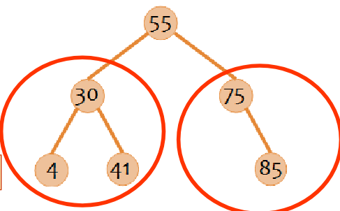
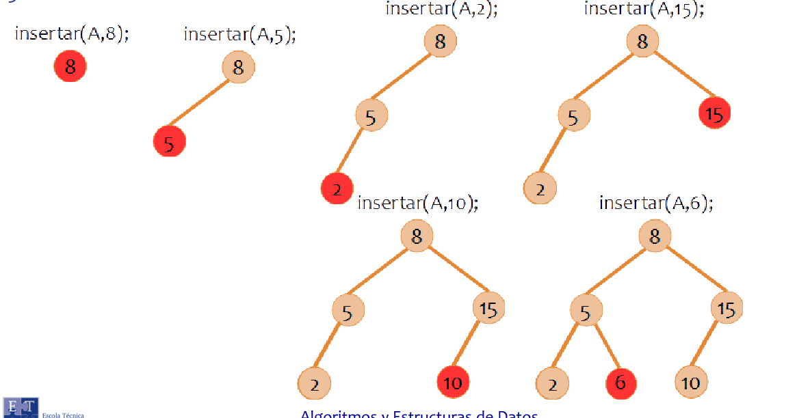
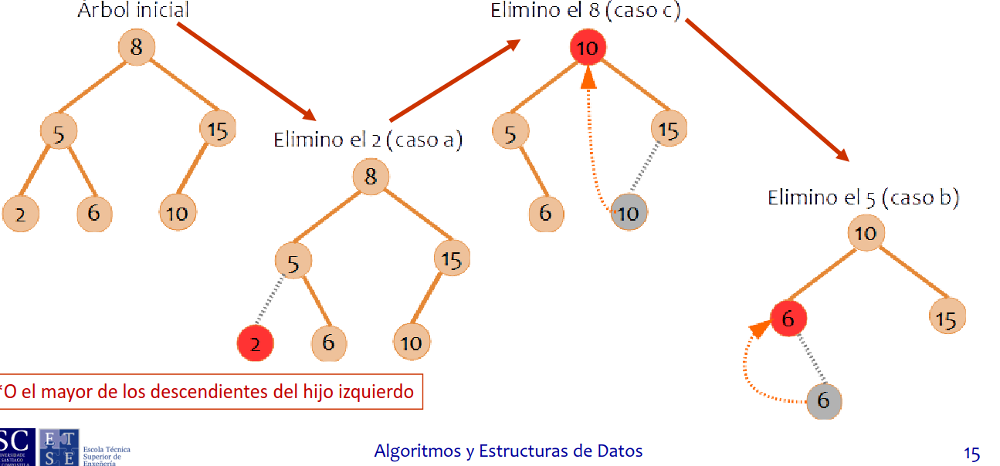
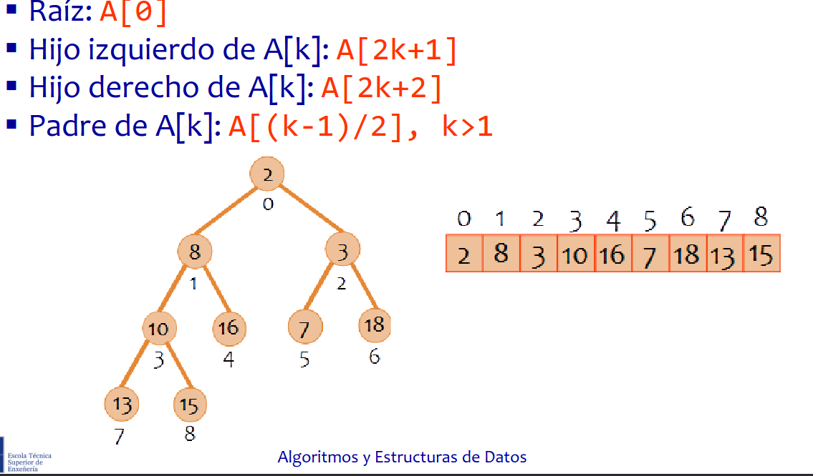
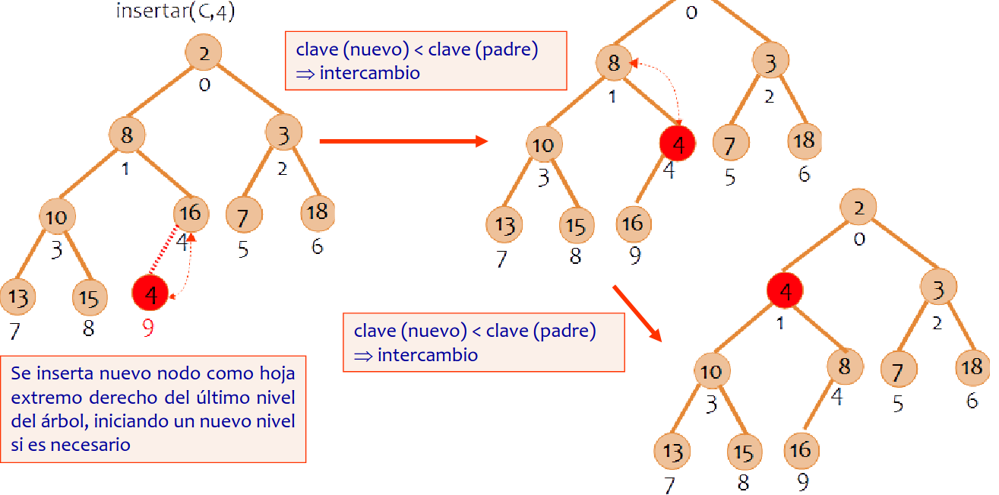
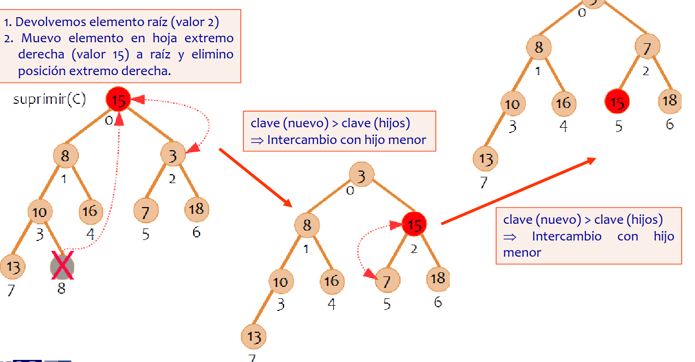
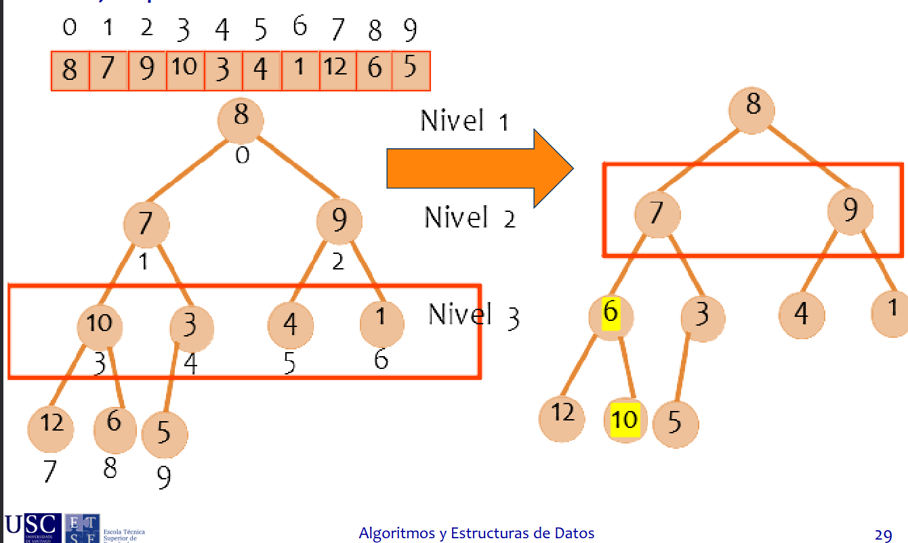
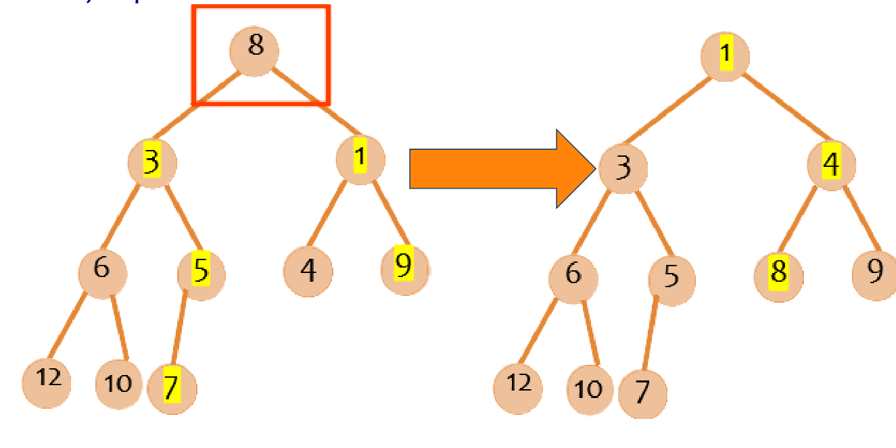

ESTRUCTURAS PARA BÚSQUEDA
Escrito por Adrián Quiroga Linares.
Un uso importante de los árboles, especialmente de los árboles binarios, es en algoritmo de búsqueda. Para ellos, se han desarrollado árboles binarios de búsqueda.
2.1 Árbol Binario de Búsqueda
Árbol binario en el que, para todo nodo, los elementos de su subárbol izquierdo tienen un valor menor que él, y todos los elementos de su subárbol derecho tienen un valor mayor que él.
Presenta clara ventaja de que localizar un elemento es muy fácil y rápido, al estar todos los datos ordenados. Además, al realizarle el recorrido inorden, los elementos se imprimen ordenados de menor a mayor.

Inserción
En un ABB la inserción no se puede realizar en el primer hueco libre que se vea, sino que hay que respetar la estructura, buscando desde la raíz el hueco correspondiente al nodo que queremos insertar. Por lo tanto, la inserción es recursiva, ya que se parte del nodo raíz y se va mirando si el elemento que queremos insertar es menor o mayor, bajando por la rama correspondiente hasta encontrar su sitio. Como clara desventaja de este tipo de árbol, tenemos el caso en el que la mayor parte de los elementos que se inserten sea mayores o menores que el nodo raíz, provocando un árbol desbalanceado, lo que además aumenta el tiempo de búsqueda, al tener que recorrer muchos elementos, como si se tratase de una lista.
void insertar(abb *A, tipoelem E) {
if (es_vacio(*A)) {
*A = (abb) malloc(sizeof (struct celda));
(*A)->info = E;
(*A)->izq = NULL;
(*A)->der = NULL;
return;
}
tipoclave cl = _clave_elem(&E);
int comp = _comparar_clave_elem(cl, (*A)->info );
if (comp > 0 ) {
insertar(&(*A)->der, E);
} else {
insertar(&(*A)->izq, E);
}
}

## Eliminación La desventaja en el caso de la eliminación reside en tener que **reestructurar** el árbol si se eliminan ciertos nodos, para mantener la estructura que cumpla las restricciones de los **ABB**. Existen 3 posibles situaciones de eliminación: - **Si el nodo es hoja**, se suprime del árbol sin más - **Si tiene un único hijo**, se intercambia de posición con su hijo y se elimina del árbol - **Si tiene 2 hijos**, buscamos el menos de todos los descendientes del hijo derecho, sustituimos por dicho nodo, y lo eliminamos del árbol. Otra opción es sustituir por el nodo de mayor valor de los descendientes del subárbol izquierdo ```C Algoritmos y Estructuras de Datos 16 void suprimir(abb *A, tipoelem E) { abb aux; if(!es_vacio(*A)){ return; } tipoclave cl = _clave_elem(&E); int comp = _comparar_clave_elem(cl, (*A)->info); if(comp < 0){ suprimir(&(*A)->izq, E); } else if (comp > 0){ suprimir(&(*A)->der, E); } else if (es_vacio((*A)->izq) && es_vacio((*A)->der)) { _destruir_elem(&((*A)->info)); free(*A); *A = NULL; } else if (es_vacio((*A)->izq)) { aux = *A; *A = (*A)->der; _destruir_elem(&aux->info); free(aux); } else if (es_vacio((*A)->der)) { aux = *A; *A = (*A)->izq; _destruir_elem(&aux->info); free(aux); } else { _destruir_elem(&((*A)->info)); (*A)->info = _suprimir_min(&(*A)->der); } } ```
2.2 Montículo binario
Árbol binario completo que da soporte eficiente a las operaciones del TAD cola de prioridad . Por tanto, sus aplicaciones son las mismas que las aplicaciones de una cola con prioridad. Pueden ser montículos de mínimos, de forma que los elementos con menor valor tienen mayor prioridad, o montículos de máximos, en los que los elementos de mayor valor tienen mayor prioridad. Por lo general usaremos montículos de mínimos, por que siempre se debe cumplir la condición de que cada nodo tenga un valor menos que el de cualquiera de sus hijos. Por tanto se dice que los montículos mantienen un orden parcial, ya que no es tan estricto como los ABB, pero lo es más que una ordenación aleatoria EN este tipo de aplicaciones hay que buscar siempre el elementos de mayor prioridad, que será siempre la raíz.
Implementación
Dinámica
Igual que el resto de los árboles binarios, cada elemento consta de su valor y un puntero a cada uno de sus hijos.
Estática
Se representa los elementos del árbol dentro de un array., usando el índice de cada elemento como localizador (puntero) de su padre o de sus hijos. De esta forma, el hijo izquierdo de k se sitúa en la posición 2k y el hijo derecho en la posición 2k+1 , mientras que su padre entra en la posición k/2. Esta representación facilita las operaciones de búsqueda tanto en simplicidad como en tiempo de ejecución, pero se requiere conocer el número máximo de elementos de antemano. Además, el hecho de ressturcturar el árbol se hace más difícil en este tipo de implementaciones.

Inserción
Como árbol binario completo que es, la inserción se hace en el hueco libre más a la izquierda del último nivel. Sin embargo, si se inserta un elemento con un valor menor que su padre, es necesario reorganizar el árbol intercambiando el elemento con su padre hasta llegar una posición en la que se cumpla el criterio.
void insertar(cola *C, tipoelem E, int prioridad){
int I, padre;
unsigned encontrado;
(*C)->ult=(*C)->ult+1;
I=(*C)->ult;
encontrado=0;
while(I>0 && !encontrado){
padre=(I-1)/2;
if (prioridad > (*C)->datos[padre].prioridad)
encontrado=1;
else{ //pongo padre en posición I
(*C)->datos[I].elemento=(*C)->datos[padre].elemento;
(*C)->datos[I].prioridad=(*C)->datos[padre].prioridad;
I=padre;
}
}
//Encontré su sitio, inserto el dato
(*C)->datos[I].elemento=E;
(*C)->datos[I].prioridad=prioridad;
}

Eliminación
En este tipo de árboles, el elemento que se quiere suprimir es siempre el de mayor prioridad, es decir, la raíz. Para llevar a cabo esta operación, el nodo raíz se intercambia de posición con el nodo hoja más a la derecha, y una vez allí se elimina. A continuación se procese a la reorganización del nuevo nodo raíz hasta encontrar su sitio, intercambiándolo con el hijo menor en cada caso.
void suprimir(cola *C){
tipoelem elemento;
int I,J, prioridad;
unsigned encontrado;
elemento=(*C)->datos[(*C)->ult].elemento;
prioridad=(*C)->datos[(*C)->ult].prioridad;
(*C)->ult=(*C)->ult-1;
I=0; //raíz
J=2*I+1; //hijo izquierdo de raíz
encontrado=0;
while(J<=(*C)->ult && !encontrado){
if(J<(*C)->ult)
if ((*C)->datos[J].prioridad > (*C)->datos[J+1].prioridad)
J++; //hijo derecho
if(prioridad <= (*C)->datos[J].prioridad )
encontrado=1;
else{
(*C)->datos[I].elemento=(*C)->datos[J].elemento;
(*C)->datos[I].prioridad=(*C)->datos[J].prioridad;
I=J;
J=2*I+1;
}
}
(*C)->datos[I].elemento=elemento;
(*C)->datos[I].prioridad=prioridad;
}

Monticulación o heapify
Consiste en:
- Dibujar el árbol que resulta a partir del array
- Si el arbol tiene L niveles, hacer desde i=L-1 hsata 1 -Comprobar si cada nodo del nivel i cumple la regla del orden parcial, es decir , es menor o mayor que sus hijos. Si no la cumple, intercambiar con elmayor/menor de sus hijos. -Propagar esta comparación hacia los niveles de i hasta L-1


2.3 Guía rápida resolver ejercicios tipo
Crear un árbol binario
Cogemos el primer elemento que nos den, y el siguiente elemento comparamos si es mayor o menor, si es menor me muevo a la izquierda, si es mayor a derecha, y así hasta que no haya nada. Inorden muestra la lista en orden Preorden muestra el proceso de inserción Postorden muestra el proceso de eliminación
Eliminar nodos árbol binario
Hay 3 casos Si es un nodo hoja se elimina directamente Si el nodo tiene un único hijo se intercambian y se elimina Si el nodo tiene dos hijos, se intercambia con el mayor izquierdo o el mayor derecho
Inserción en montículos
Lo construimos así: Lo insertamos en el último nodo y vamos intercambiándolo hasta donde le corresponde, tener en cuenta que max-heap tiene el nodo de más valor arriba y min-heap el de menor arriba Para eliminar si lo pide cambiamos la raíz con el ultimo nodo, eliminamos y recolocamos.
Heapify
Vamos reordenando nivel a nivel los nodos si nos los dan sin ningún tipo de orden: